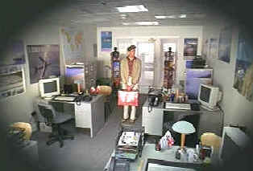

| Truman Show/A,A- |
| Paramount/1998/103/WS 1.85 |
The Truman Show is not to be missed! Powered by the consummate taste and directing perfection of Peter Weir, the film is not only original, it is beautifully filmed with meticulous attention to technical and set details, a hallmark of all Weir films.
 |
| Travel posters are amongst the brilliant details. ©Paramount |
The Truman Show is a television
production born on the wings of baby Truman and created by
Christoff. It is a television show like
no other, for a world in which Truman will grow and be watched
by millions of viewers has been created, unbeknownst to Truman,
whose world forever will be peopled by actors playing life around him. The needs of the show dictate the Truman's
fate. An actor with a contract gripe means that Truman loses a
father in an accident at sea. Truman is the ultimate puppet,
manipulated by his creator in the perfectly controlled
environment of Seahaven Island, built under a fantastic dome
that strives to hide its artificiality from Truman at every
turn.. Each moment of Truman's life is scrutinized by cleverly placed and undetectable
cameras. The cameras never sleep and the show is broadcast
twenty four hours a day.
What happens when Truman begins to
suspect that something is amiss? The every day acceptance
of his daily routine becomes suspect at every turn. It's a
fascinating script, often hilarious with a dark edge at its
core.
Jim Carrey, like him or not, does a terrific
job as Truman Burbank. Carrey's gift for innocence is mined to
magnificent effect. After seeing the film for the second
time, I was even more
impressed by the depth of Carrey’s performance. It’s a very
dark film and the second time around made it even harder to
laugh at some of the humor at
Truman’s expense. The overpowering
sadness of the situation wraps its tentacles around you just as
Seahaven is choking off Truman’s lifeblood. Along with Carrey,
Ed Harris gives a frightening
performance as Christoff. I actually had trouble recognizing the
actor even when I realized it was him. Harris merged with
the part with an eerie
malevolence.
The script by Andrew Niccol (Gattaca)
is a beauty, but, as with all Peter Weir films, I assume
important collaboration from Weir on the writing. Casting is impeccable.
From Laura Linney as Truman's wife to Noah Emmerich as his best
buddy, the actors master their artificial world. Paul Giamatti
keeps the control room operating full humor ahead.
This is a film that will stand up to
repeated visits. Small details you might have missed once around
suddenly are clear on the periphery. It's a triumph of
production design, paced to perfection by Weir, and photographed
with astounding artificial power. All I can say is "And in
case I don't see ya, good afternoon, good evening and good
night."
The Truman Show DVD is a little less than perfect, with some
slight softness creeping into a couple of scenes. An early
Paramount DVD release, Truman is not anamorphic 16 x 9 enhanced. Otherwise,
it's as consistently sharp as the the repetitive details of
Truman's life. Seahaven's color scheme, artificially alive, is
captured with excellent polish on this DVD. Ambient space
information is well preserved by the Dolby Digital 5:1 surround
mix.
Selections from the feature archive include articles on Akira Kurosawa, Frank Darabont, Blonde Bimbos, Hollywood Street Gangs, or Vietnam: The Hollywood Pariah, and many more....

Preston Sturges was Hollywood's resident comic genius for more than a decade. His movies are timeless. Click on his image to read all about it.

 Gary
Morris's insightful publication Bright Lights Film Journal
turns the celluloid in films from a unique perspective. Click on the image above for more pure movie views.
Gary
Morris's insightful publication Bright Lights Film Journal
turns the celluloid in films from a unique perspective. Click on the image above for more pure movie views.
 Brad
Lang continues to add more interesting to the extensive
collection at Classic
Movies. Everything from actors and actress to
your favorite directors is linked at the site.
Brad
Lang continues to add more interesting to the extensive
collection at Classic
Movies. Everything from actors and actress to
your favorite directors is linked at the site.

Looking
for a fix of irreverent flick
dissection. Check out The
Big Combo where four guys rave
and rant about movies.
They may
be judgmental, but that's the point, isn't it. Lots of DVD reviews
plus news and more.
Click on the link to visit the judge's chambers.
The Movie Poster Archive include extensive poster images from the films of stars like Susan Hayward, Kirk Douglas, Katharine Hepburn and many more. This month's featured star is Kirk Douglas.